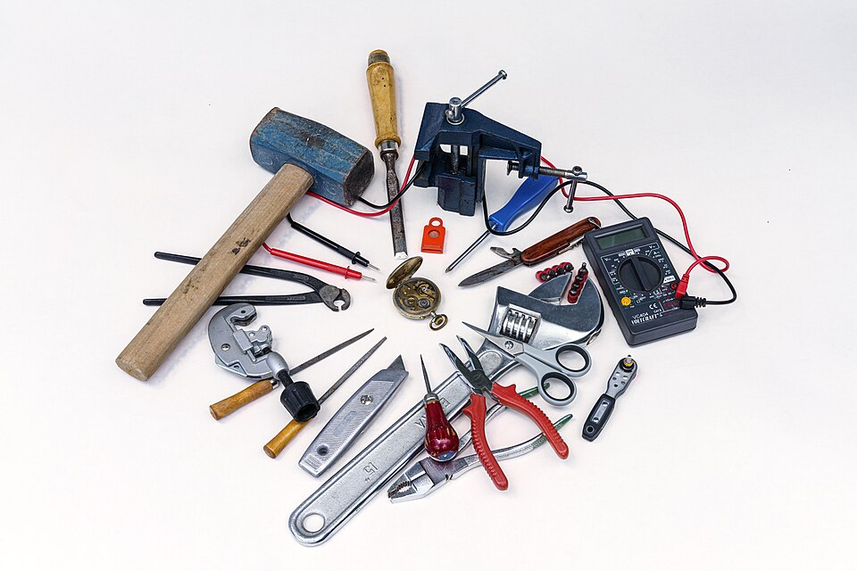

Our Services

Servicing
Regular servicing for Japanese cars. Oil changes, filters, brakes and general maintenance.
Performance
We can help with exhaust systems, suspension, brakes and other performance modifications.
Diagnostics
Computer diagnostics and fault finding for modern Japanese vehicles.
Restoration
We also work on older Japanese cars and can help with restoration projects.
We work with many Japanese manufacturers. Visit Nissan Ireland for more information.